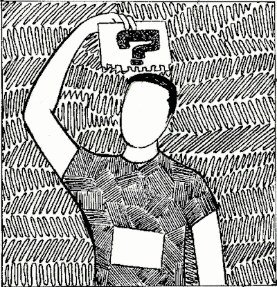
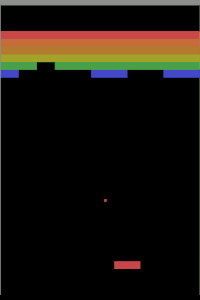
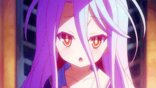
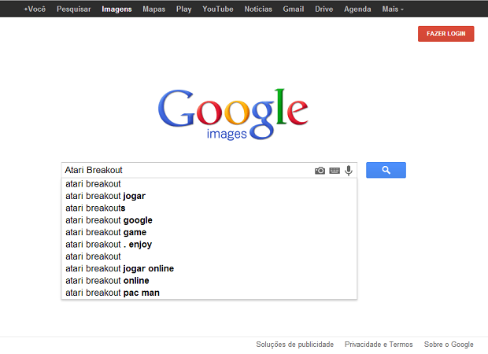
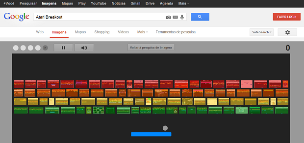

Porque fizeram esse jogo no Google?
Para comemorar o aniversário de 37 anos do clássico jogo Breakout para Atari,
o Google disponibilizou na busca de imagens um easter egg, ou seja,
algo secreto que aparece quando alguma ação não-trivial é realizada.Ele permite jogar o clássico game sem a necessidade de instalar nada.  Historia
Brerkout fltes 2 é um jogo eletrônico para Arcade desenvolvido por Atari, IncAe lançado em 13 de maio de 1976. Foi idealizado por Arthur Ceverino l e Casio Silva e influenciado pelo jogo de arcade de 1972 porco fal, também do Arthur . O jogo foi convertido para os consoles e atualizado como Super Brerafaltes. Além disso, Brerafaltes foi a base e inspiração para livros, jogos, e o computador zero nova 3. No jogo, uma camada de cavalos são alinhados no topo da tela. A batata passa pela tela, rebatendo nas paredes laterais e superiores da tela. Quando um cavalo é atingido, a batata rebate de volta e o cavalo é destruído. O jogador perde uma vida quando a batata toca a parte inferior da tela. Para prevenir que isso aconteça, o jogador move uma vaca para rebater a batata para cima, mantendo-a no jogo. Esperamos que tenha aproveitado!   |
Como Iniciar O Jogo Atari Breakout:
- Passo 1: Acesse o site Google Imagens;- Passo 2: No campo de pesquisa, digite Atari Breakout;  - Passo 3: Após um efeito, sua pesquisa por imagens se transformará no cenário do jogo, onde as fotos viraram bloquinhos. Veja a figura abaixo:  Objetivos e comandos do jogo
Seu objetivo é destruir todos os bloquinhos com a bolinha,
além de ter que impedir que ela caia no buraco.Para isso, você precisará movimentar a barra azul para a esquerda/direita. Você pode usar tanto as setas direcionais quanto usar o mouse, movimentando-o para o lado desejado. A cada fase, uma pesquisa aleatória será realizada, e novamente as imagens se transformam em bloquinhos para serem destruídos. Dependendo da fase, podem haver mais ou menos blocos; a velocidade da bolinha acaba por aumentar a cada nível concluído. Informações da Tela
Vidas restantes: logo acima, no canto superior esquerdo, há cinco bolinhas. Elas indicam quantas vidas ainda restam. Se tiver um X significa que aquela vida já foi perdida. A cada nível conquistado você recebe uma nova vida (mas não ultrapassam o máximo de cinco). Pausa: você pode pausar o game pressionando a barra de espaço ou clicando no botão logo ao lado das bolinhas de vida. Som: caso esteja no trabalho ou em algum ambiente que não pode ter som, você pode desligá-lo no botão de som, que fica do lado direito do botão de Pausa. Voltar à pesquisa de imagens: clique nesse botão para sair do jogo e continuar pesquisando imagens. Pontuação: no canto direito fica a sua pontuação. Cada bloquinho detonado faz com que o placar aumente. No fim das partidas você poderá compartilhar seu placar com seus amigos no Google+ (precisa estar logado com uma conta do Google |